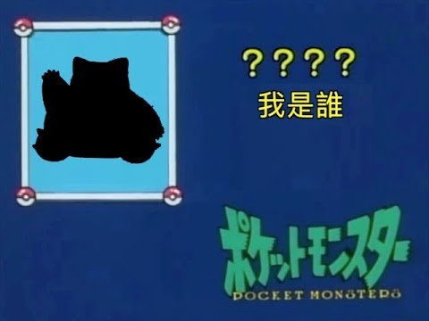
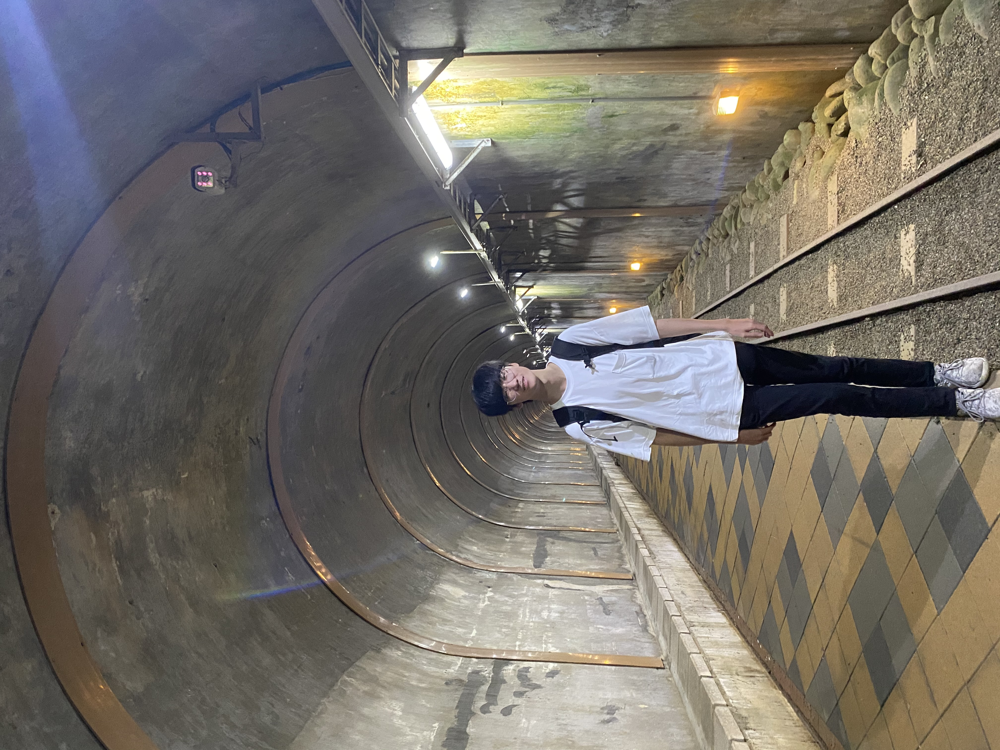
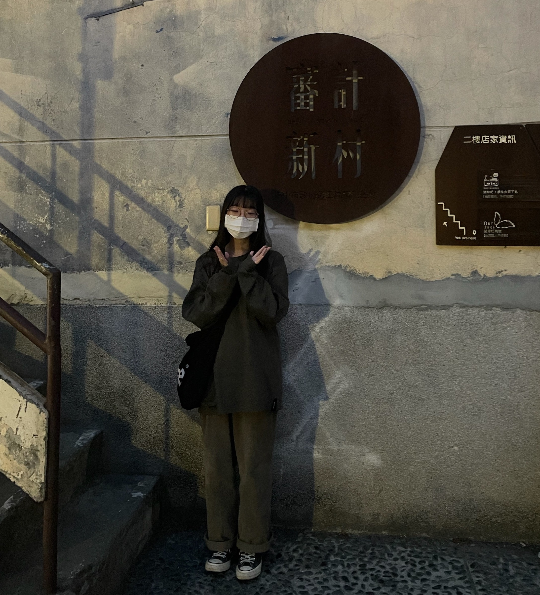
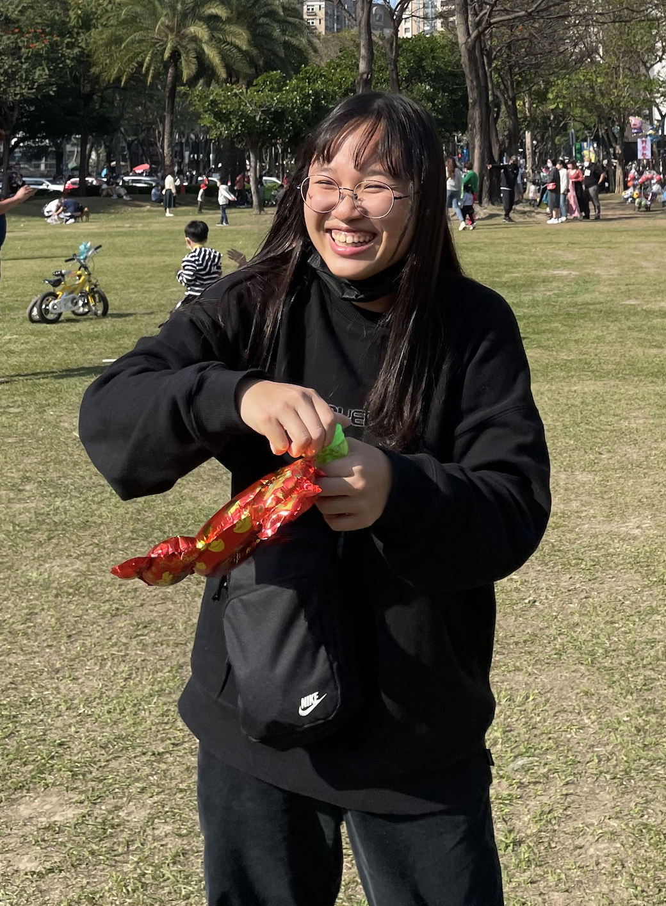

關於...




李紹誠/資管二乙 |
| 通過這次期中報告從中學習到了很多，不管是排版技巧或是動畫製作都有了更多的了解，也是因為實際操作過後，能夠稍微了解到我們每天在使用的網頁背後是需要花費多少心思設計，期待經過本課程後能將學習到的學以致用 |

李嘉潔/資管二乙 |
| 在這學期開始前，多媒體一直是我蠻期待的一堂課，在上學期修網頁程式設計時，一直覺得比起後端的程式碼，我更喜歡能夠看到自己的設計出現在網頁上面，也對於美編、排版、設計是比較有想法和興趣的。透過這次的專案，為了讓一個網頁從零到有，在找資料、找程式碼的過程中也讓我在前端設計的能力更加進步了一些，也更確信了自己對這方面的興趣，希望在分別學過了前後端後，有足夠的能力將他們整合在一起，架出一個完整的網站。 |
潘聖昀/資管二乙 |
| 上學期修網頁程式設計時，就覺得前端的部分很有趣，一直躍躍欲試。 這學期輪到我們班修多媒體程式設計，終於可以實際做出前端編排， 整個過程都相當有成就感，也藉此發現自己在這方面還蠻擅長， 既能結合我想學習的程式編寫又能發揮我在美感、排版上的能力。 整體來說我真的非常喜歡這學期的課程，老師也將各個標籤屬性在投影片中給得很詳盡，課程很棒、老師也很棒！也讓我未來的志向稍微更明確了一點。 |

蘇郁婷/資管二乙 |
| 上學期學的是後端程式，跟前端連結的時候都看不太懂網頁的程式碼，所以導致連結的時候有些地方會出錯，檔名位置不對或放程式碼的地方不對等等的問題，這學期學了前端，期末和後端連接的時候就會輕鬆很多。這次期中專案做網頁我也覺得很有趣，可以按照自己喜歡的樣子用各種方式排版出來，雖然還不是很熟練，但之後多做幾次會更進步的～很開心能學到這方面的技能。 |